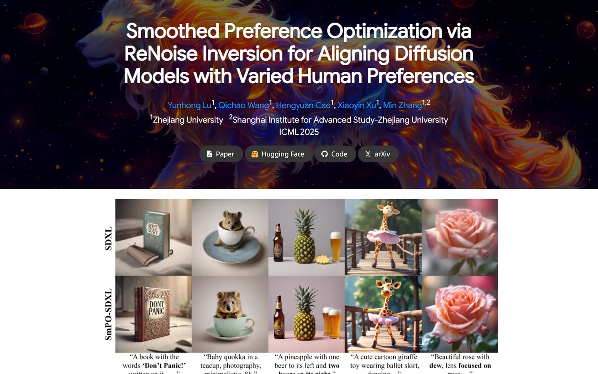

Smoothed Preference Optimization via ReNoise Inversion for Aligning Diffusion Models with Varied Human Preferences
A cosmic fire-lion poster dimmed to half, with the paper title glowing white across it.

Checked against the rendered page. The shared pool screenshot (smpo.png/.webp) was captured before the banner and teaser images loaded (grey banner, broken teaser); color share and first-viewport notes use a second capture taken 6s after load (scratchpad/smpo_reshot.png). Pool shot may need re-snapping.
Why it is here
Full-bleed illustrated hero with a legible white title and dark pill links, then a crisp before/after sample grid and a clearly drawn pipeline figure. It adds the image-led hero style to the set.
Overview
Color Palette
Typography
Google Sans
Smoothed Preference Optimization via ReNoise Inversion for Aligning Di
Abstract · Method · Results · BibTeX — 0123456789
Noto Sans
Smoothed Preference Optimization via ReNoise Inversion for Aligning Di
Abstract · Method · Results · BibTeX — 0123456789
Spacing & Shape
Page Modules
Guidelines
More like this

GAMEBoT: Transparent Assessment of LLM Reasoning in Games
A tidy game-arena scoreboard: a mascot crest over a navy title, then cool grey-blue gradient bands holding news cards and violet-headed score tables.

InstructPart: Task-Oriented Part Segmentation with Instruction Reasoning
A lab notebook in grey and white stripes, where the title marks its own key words in teal and a dashed-panel kettle explains the task before you read a line.

Symmetrical Visual Contrastive Optimization: Aligning Vision-Language Models with Minimal Contrastive Images
A two-color argument: cyan means the matching image, orange the mismatched one, and that code runs unbroken from the prose highlights into every figure across alternating grey and white bands.

Slamming: Training a Speech Language Model on One GPU in a Day
A one-chart argument: a big annotated scaling plot sits where the teaser video would be, then a grey abstract and a quiet grid of audio players tagged by GPU budget.

Reflection Separation from a Single Image via Joint Latent Diffusion
A pane of night glass you can wipe clean with one drag.

SALAD: Skeleton-aware Latent Diffusion for Text-driven Motion Generation and Editing
A quiet typeset monograph, its grey and white plates turning one after another.